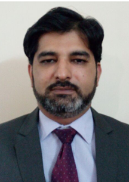

|  |
Dr. Fawad Nasrullah, M.B.B.S., F.C.P.S. Specialist in Male Sexual Health, Infertility, Sexual Problems, and Advanced Endoscopic Urology Associate Professor, Urology Lahore General Hospital Lahore, Pakistan For appointments at Hameed Latif Hospital, 14 Ferozepur Rd, Lahore, please call: (0332) 3511630 For appointments at Latif Hospital, Johar Town, Allahoo Chowk, Lahore, please call: (0332) 3511630 International: (+92-300) 8867437, Friday & Saturday between 10-11PM PST Email for Appointments Only: fawadnasrullah@hotmail.com Dr. Fawad Nasrullah offers online paid second opinion. Please email for online appointment details. There are several doctors in Lahore who have the same first name as Dr Fawad Nasrullah. Please note that Dr. Fawad Nasrullah has nothing to do with the different doctor in the news in last two days. Dr Fawad Nasrullah was attending a medical conference & training in UAE at that time. |
Professional Education:
Fellow (F.C.P.S.), 2004
College of Physicians and Surgeons, Pakistan
M.B.B.S., 1998
Punjab University, Punjab Medical College, Faisalabad, Pakistan
Professional Experience:
Lahore General Hospital, Ferozepur Road, Lahore, Pakistan
Lahore General Hospital, Ferozepur Road, Lahore, Pakistan
Lahore General Hospital, Ferozepur Road, Lahore, Pakistan
Mayo Hospital, Lahore, Pakistan
Mayo Hospital, Lahore, Pakistan
In the News:
Professional Interests and Activities: